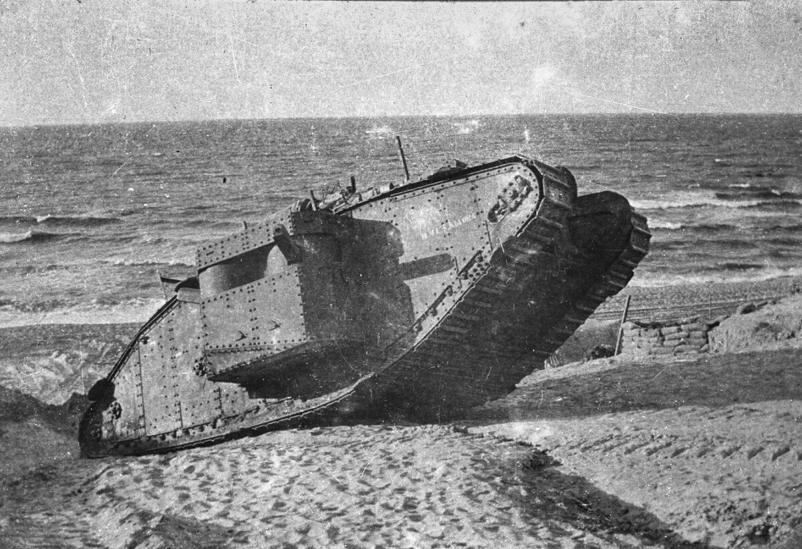
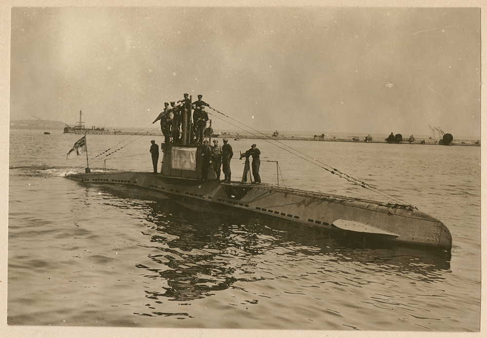
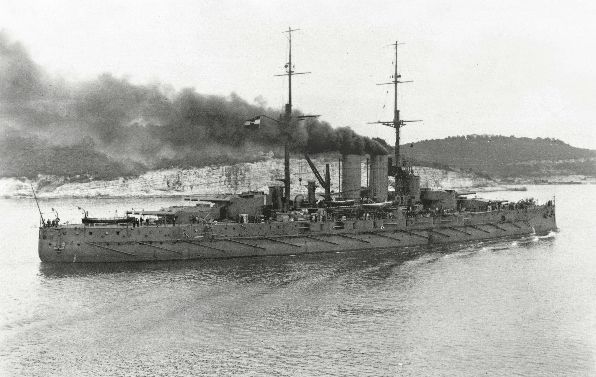
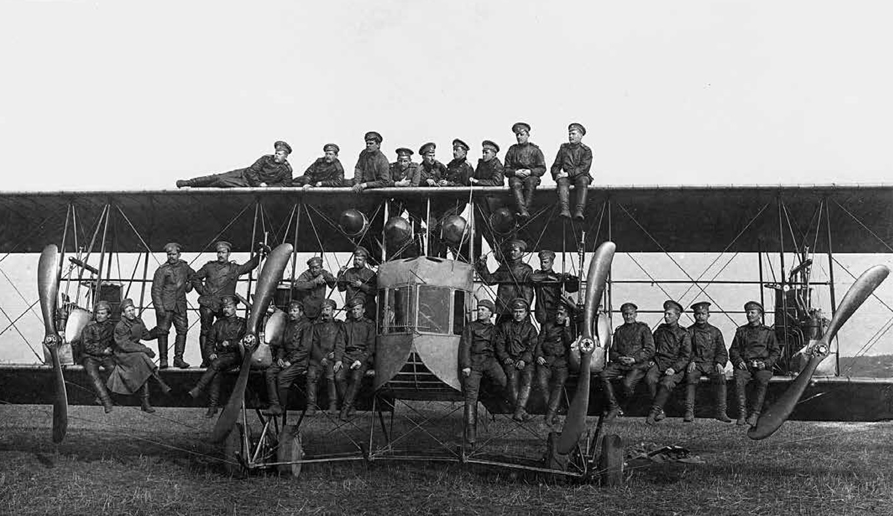

Новые виды вооружения
Использование первых танков
Своим появлением танки обязаны Первой мировой войне.
После относительно краткого начального манёвренного этапа боевых действий на
фронтах установилось равновесие («окопная война»).
Глубоко эшелонированные линии обороны противников было сложно прорвать. Обычный
способ подготовить наступление и вклиниться в оборону противника состоял в
массированном использовании артиллерии для
разрушения оборонительных сооружений и уничтожения живой силы с последующим
вводом в прорыв своих войск. Однако выяснилось, что по перепаханному взрывами, с
разрушенными дорогами, перекрываемому к тому же перекрёстным огнём с флангов
участку «чистого» прорыва не удаётся
ввести войска достаточно быстро, к тому же противник по действующим
железнодорожным и грунтовым дорогам в глубине своей обороны успевал подтягивать
резервы и блокировать прорыв. Также развитие прорыва затруднялось сложностью
снабжения через линию фронта.
Ещё одним фактором, превращавшим манёвренную войну в позиционную,
являлось то, что даже длительная артподготовка не могла полностью
уничтожить все проволочные заграждения и пулемётные гнёзда, которые затем
сильно сковывали действия пехоты. Бронепоезда зависели от
железнодорожных путей. В результате возникла мысль о принципиально новом
самоходном боевом средстве с высокой проходимостью (добиться которой можно было только с
помощью гусеничного шасси), большой огневой мощью и хорошей защищённостью (хотя бы против пулемётного и винтовочного
огня). Такое средство могло бы с высокой скоростью преодолевать линию фронта
и вклиниваться в глубину обороны противника, осуществляя, по крайней мере,
тактические обходы.
Впервые танки Mark I были использованы английской армией против германской армии 15 сентября 1916 года во Франции, на реке Сомме. В ходе боя выяснилось, что конструкция танка недостаточно отработана — из 49 танков, которые англичане подготовили для атаки, на исходные позиции выдвинулось только 32 (17 танков вышли из строя из-за неполадок), а из этих тридцати двух, начавших атаку, 5 застряло в болоте и 9 вышли из строя по техническим причинам. Тем не менее, даже оставшиеся 18 танков смогли продвинуться вглубь обороны на 5 км, причём потери в этой наступательной операции оказались в 20 раз меньше обычных.

Хотя из-за малого количества танков фронт не удалось прорвать
окончательно, новый вид боевой техники показал свои возможности, и выяснилось,
что танки имеют большое будущее. В первое время после появления танков на фронте
германские солдаты боялись их панически.
Бронированные громадины несмотря на всю неуклюжесть
и тихоходность «первого блина»
вызвали ужас в окопах немцев, но их было мало и радикально
помочь наступлению танки тогда не смогли. Но постепенно боевых машин
в войсках Антанты становилось всё больше, они становились всё совершеннее
и через два года уже внесли серьёзный вклад в победу над Германией.
Хотя идея о танках принадлежала Леонардо да Винчи ещё в 16 веке, британцы
произвели самый первый танк в истории только 1915 году. Это был танк под маркировкой
«Mark I». Танк британцев вмещал в
себя 8 человек экипажа. Mark I нёс
на себе 6-фунтовые пушки. Из этих пушек Mark I мог стрелять на расстояние
примерно 2 км. Так же «первый марк»
имел несколько пулемётов. Это было четыре 8-мм пулемёта «Гочкис» и четыре 7,7-мм пулемёта «Виккерс».
Использование подводных лодок
В
отличие от надводного
судна, подводная лодка обладает способностью
преднамеренно изменять свою осадку вплоть до полного погружения в воду и ухода
на глубину за счёт заполнения забортной водой цистерн заднего балласта.
Погружение и всплытие подводных лодок осуществляется за счёт погашения и
восстановления запаса плавучести.
Во время Первой мировой войны появились подводные лодки с дизельным двигателем для движения на поверхности и электрическим для движения под водой. К дизельному двигателю подключали генератор, который производил электричество для подзарядки батарей. Первой в мире подводной лодкой с дизельным двигателем стала российская Минога.

Ускоренное развитие подводного флота в годы
Первой
мировой войны привело
к тому, что субмарины стали грозным оружием. Всего за время войны 600 подводных
лодок воюющих государств потопили 55 крупных боевых кораблей (линкоры
и крейсера),
105 эсминцев, 33 субмарины. Действия германских подводных лодок на
морских коммуникациях поставили Англию на грань поражения в Первой
мировой войны.
По итогам Первой мировой войны был сделан вывод о необходимости
взаимодействия подводных лодок с надводными кораблями эскадр, поэтому в период
между мировыми войнами преимущественно совершенствовались надводные
тактико-технические характеристики (например строились эскадренный
подводные лодки с увеличенной по сравнению с
обычными субмаринами надводной скоростью или подводные крейсера и
подводные мониторы с
мощным артиллерийским оружием).
В зависимости от класса и оснащения подводные лодки могут быть
предназначены:
- для поражения важных военно-промышленных и административных центров, военно-морских
баз, портов и других наземных
объектов,
- для уничтожения подводных и надводных кораблей и судов
противника,
- для скрытной постановки минных заграждений,
- для ведения разведки
- для использования в качестве корабля связи, осуществления ретрансляции
сообщений, что теоретически позволяет поддерживать связь штаба с кораблями,
находящимися в любой точке мирового океана,
-
для высадки диверсионно-разведывательных групп и выполнения других боевых и специальных
вспомогательных задач.
В рамках
военно-морского флота вооружённых сил государства подводные лодки могут
составлять подводные силы флота. Подводные лодки способны выполнять боевые
задачи одиночно, группами, завесами, в составе группировок подводных лодок и
разнородных сил, самостоятельно и во взаимодействии с другими видами вооружённых
сил. До 1906 года подводные
лодки в Русском флоте не выделялись как самостоятельный вид кораблей и
числились миноносцами. Их команды набирались на добровольной основе из офицеров
и матросов надводных кораблей.
Использование дредноутов
Дредноут — «бесстрашный», по имени первого корабля
этого класса— появившееся в начале XX
века поколение артиллерийских военных кораблей,
характерной особенностью которых было однородное артиллерийское вооружение из
большого числа орудий только крупного калибра. В широком смысле термин может
применяться к кораблям различных классов, обладающим этой особенностью, однако
наиболее часто это понятие ассоциируется с линейным кораблём и является
синонимом линейного
корабля первой четверти XX
века. Первый в мире дредноут был построен в Великобритании в 1906 году.
Появление в 1906 году
английского линкора «Дредноут»
изменило расклад сил на море. Одно это судно превосходило по мощности
целую эскадру броненосцев. На нём было установлено десять 305-мм пушек для
централизованного огня, а также несколько 76-мм противоминных пушек.
Но крупнокалиберное оружие было основным. Инновационны здесь две вещи:
основное оружие только крупного калибра, огонь вёлся централизованно.
На предшествовавших «Дредноуту»
кораблях было множество орудий разного калибра и каждое орудие вело огонь
самостоятельно.

Каждый «Дредноут» стоил
примерно вдвое больше, чем эскадренный броненосец предшествовавшего ему типа, но
при этом имел над ним принципиальное превосходство по тактическим
качествам — скорости, защите, эффективности стрельбы и способности к
концентрации огня артиллерии.
В России эти новые корабли назвали «линкорами», так как единственно
эффективным строем эскадры при ведении залпового огня был строй линии. Старые
эскадренные броненосцы также были включены в этот класс, однако после появления
«Дредноута» в любом случае могли
считаться не более чем второсортными кораблями.
Использование аэропланов
Аэропланы использовались ещё до Первой Мировой войны. Но она заставила
державы пересмотреть род деятельности летающих аппаратов. До войны, самолеты
были задействованы, в основном в разведке. И не были предназначены для ведения
боевых действий
Илья́ Му́ромец (С-22 «Илья Муромец»)— общее название нескольких серий четырёхмоторных цельнодеревянных бипланов, выпускавшихся в Российской империи на Русско-Балтийском вагонном заводе в течение 1914—1919 годов. На самолёте поставлен ряд рекордов грузоподъёмности, числа пассажиров, времени и максимальной высоты полёта. Является первым в истории серийным многомоторным бомбардировщиком.

Самолёт разработан авиационным отделом Русско-Балтийского вагонного
завода в Петербурге под руководством И. И. Сикорского. Технический
персонал отдела составляли такие конструкторы, как К. К. Эргант, М. Ф. Климиксеев, А. А. Серебрянников
В. С. Панасюк,
князь А. С. Кудашев, Г. П. Адлер, Н. Н. Поликарпов и
др. «Илья Муромец» появился в
результате дальнейшего развития конструкции «Русского витязя», в ходе которого она
оказалась практически полностью переработана, без существенных изменений была
оставлена лишь общая схема самолёта и его коробка крыльев с
установленными в ряд на нижнем крыле четырьмя двигателями, фюзеляж же
был принципиально новым. В результате с теми же четырьмя немецкими моторами
«Аргус» в 100 л. с. новый самолёт обладал вдвое большей массой нагрузки и
максимальной высотой полёта.
В 1915 году на заводе «Руссо-Балт» в Риге инженером Киреевым
был сконструирован авиадвигатель Р-БВЗ. Двигатель был шестицилиндровым
четырёхтактным с водяным охлаждением. Радиаторы автомобильного типа
располагались по его бокам. Р-БВЗ устанавливался на некоторые
модификации «Ильи
Муромца».
Весной 1914 года первого «Илью Муромца» переоборудовали
в гидроплан с
более мощными двигателями. В этой модификации он был принят морским ведомством и
оставался крупнейшим гидропланом до 1917 года.
Самолёты Avro 504 Series — британский двухместный базовый учебно-тренировочный самолёт. Первый Авро-504 поднялся в воздух в Брукленде в июле 1913 года. Фирма А. В. Ро построила 3696 самолётов. На самолёте впервые было применено удачное техническое решение, при котором двигатель самоохлаждался, вращаясь вместе с винтом, что позволило отказаться от массивной системы водяного охлаждения. 21 ноября 1914 года три (в плане было четыре самолёта, но один самолёт, из-за неполадок, остался на базе) лёгких разведчика ВВС Великобритании Avro-504 приняли участие в известном налёте на ангары дирижаблей Цеппелин в Фридрихсхафене, был потерян один самолёт. В Англии считают этот налёт первым применением стратегической авиации.
В годы после Первой мировой войны, пока Avro-504 продолжали свою службу в лётных
школах RAF, большое число избыточных 504-х было доступно для покупки как в роли
военной, так и в роли гражданской. Одно время более 300 Avro-504K находилось в реестре
гражданской авиации Британии. Они использовались для тренировки, частных
полетов, также рекламы, гражданские 504-е продолжали летать и гораздо позднее
1930-х годов в Англии.
Fokker E.I — одноместный расчалочный моноплан, использовавшийся как истребитель-разведчик конструкции Фоккера.
Fokker E.I был первым
самолётом, оснащённым синхронизатором — устройством, позволяющим стрелять из
установленного на носу пулемёта прямо по курсу без опасности повредить пулями
лопасти. Синхронизатор блокировал затвор пулемета в момент прохождения лопасти
винта мимо дульного среза оружия. Это давало существенное преимущество в бою над
любыми другими существовавшими на тот момент истребителями, у которых пулемёты
были расположены менее удобно, и союзники потеряли значительное число самолётов.
Новый истребитель был опасным даже для французских вооружённых самолётов.
Большинство французских машин имело конструкцию с толкающим двигателем, и, даже
имея на борту пулемет, у них не было возможности защитить заднюю полусферу.
Фоккер имел возможность зайти противнику в хвост и расстрелять его
двигатель.
С августа 1915 до весны 1916 года в небе доминировала германская авиация. Возникло такое понятие как «Бич Фоккера» — когда действия ВВС Антанты были парализованы присутствием германских истребителей.
Использование химического оружия
В годы Первой мировой войны стороны выработали тактику позиционной войны, при которой теряют эффективность наступательные операции. В качестве выхода из патовой ситуации предполагалось использование для прорыва обороны химического оружия. Военное использование ядовитых газов стало крупной инновацией, и диапазон отравляющих веществ тогда был широк. Хотя их летальный потенциал был ограничен 4 % смертей от общего числа поражённых. Но всё равно, смертность была очень высокой. Химическое оружие было самой главной угрозой для солдат в окопах. Разработанные со временем контрмеры против химических атак привели к снижению эффективности химического оружия, и в результате оно вышло из оборота. В начале войны применялись химические вещества раздражающего действия. Первыми в августе 1914 года их использовали французы: слезоточивым газом наполняли 26-мм гранаты. В октябре 1914 года в Битве при Нев-Шапель немецкая артиллерия открыла по британцам огонь снарядами, наполненными химическим раздражителем, однако концентрация газа оказалась небольшой, и действие было едва заметным. 22 апреля 1915 года на участке фронта около бельгийского города Ипр немцы распылили 168 тонн хлора. Атака началась, когда с востока подул слабый ветер. Газ в виде желтовато-зелёного облака стал двигаться на французские позиции. Немецкая пехота также пострадала от газов и не смогла использовать преимущество до подхода британо-канадских подкреплений.
Пушечное вооружение также активно развивалось. Увеличивалась мощь гаубиц,
которые являлись более подходящими для разрушения оборонных
сооружений.
Кроме того, на реке Сомма союзники выпустили более полутора миллионов
снарядов, ведя огонь целую неделю.
В 1914 году у немцев было небольшое количество миномётов, но к концу войны их число достигло 15 тысяч. Они использовались для разных целей: от поражения пехоты, до стрельбы газовыми снарядами, что позволяло выводить из строя вражеских солдат с минимальными повреждениями строений.